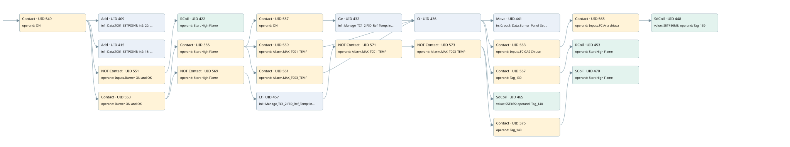

a 56.6 start high flameburner
burner control · 검색 색인 순서 9 · 원본 내부 NID 추정 8
백업 PLF 원본의 2686142 바이트 위치에서 복원한 XML. 검색 문서 1862의 객체 키 16102200db10000000000000와 연결했다. 이름 해석 33/33개. 남은 RefId는 상수 또는 미해석 참조다.
연결 구조 다시 그리기
원본 Part/PCon/Wire를 이용한 연결도다. TIA 화면의 래더 배치 또는 실행 결과를 재현한 그림은 아니다. 핀 연결은 아래 표와 원본 XML을 기준으로 읽는다. 노드 위에 마우스를 두면 피연산자 이름을 볼 수 있다.

접점·코일·블록과 피연산자
| Part UID | Gate | Negated 핀 | 연결 피연산자 |
|---|---|---|---|
| 549 | Contact | operand = ON | |
| 409 | Add | in1 = Data.TC01_SETPOINT; in2 = 20; out = App00 | |
| 415 | Add | in1 = Data.TC01_SETPOINT; in2 = 15; out = App01 | |
| 551 | Contact | operand | operand = Inputs.Burner ON and OK |
| 422 | RCoil | operand = Start High Flame | |
| 553 | Contact | operand = Burner ON and OK | |
| 555 | Contact | operand = Start High Flame | |
| 557 | Contact | operand = ON | |
| 432 | Ge | in1 = Manage_TC1_2.PID_Ref_Temp; in2 = App00 | |
| 559 | Contact | operand = Allarm.MAX_TC01_TEMP | |
| 561 | Contact | operand = Allarm.MAX_TC03_TEMP | |
| 436 | O | ||
| 441 | Move | in = 0; out1 = Data.Burner_Panel_SetPoint | |
| 563 | Contact | operand = Inputs.FC GAS Chiuso | |
| 565 | Contact | operand = Inputs.FC Aria chiusa | |
| 448 | SdCoil | value = S5T#50MS; operand = Tag_139 | |
| 567 | Contact | operand = Tag_139 | |
| 453 | RCoil | operand = Start High Flame | |
| 569 | Contact | operand | operand = Start High Flame |
| 457 | Lt | in1 = Manage_TC1_2.PID_Ref_Temp; in2 = App01 | |
| 571 | Contact | operand | operand = Allarm.MAX_TC01_TEMP |
| 573 | Contact | operand | operand = Allarm.MAX_TC03_TEMP |
| 465 | SdCoil | value = S5T#8S; operand = Tag_140 | |
| 575 | Contact | operand = Tag_140 | |
| 470 | SCoil | operand = Start High Flame |
접점 경로를 펼친 조건식
Contact·O/A·비교기의 원본 연결을 읽기 쉽게 펼친 보조 해석이다. POWER는 전원 레일 시작을 뜻한다. 호출 블록·에지·타이머의 내부 동작과 다중 쓰기 순서는 이 표로 실행 검증하지 않았다. 미해석 핀과 RefId는 원문 연결표에서 확인한다.
| UID | 동작 | 대상 | 원본 접점 경로 | 내용 |
|---|---|---|---|---|
| 422 | RCoil | Start High Flame | (ON AND NOT [Inputs.Burner ON and OK]) | 조건 성립 시 Reset |
| 441 | Move | Data.Burner_Panel_SetPoint | (((((ON AND Burner ON and OK) AND Start High Flame) AND ON) AND [Manage_TC1_2.PID_Ref_Temp >= App00]) OR (((ON AND Burner ON and OK) AND Start High Flame) AND Allarm.MAX_TC01_TEMP) OR (((ON AND Burner ON and OK) AND Start High Flame) AND Allarm.MAX_TC03_TEMP)) | Move 입력 0 |
| 448 | SdCoil | Tag_139 | (((((((ON AND Burner ON and OK) AND Start High Flame) AND ON) AND [Manage_TC1_2.PID_Ref_Temp >= App00]) OR (((ON AND Burner ON and OK) AND Start High Flame) AND Allarm.MAX_TC01_TEMP) OR (((ON AND Burner ON and OK) AND Start High Flame) AND Allarm.MAX_TC03_TEMP)) AND Inputs.FC GAS Chiuso) AND Inputs.FC Aria chiusa) | 시간 동작 SdCoil; 타이머 의미 추가 확인 / 시간 인자 S5T#50MS |
| 453 | RCoil | Start High Flame | ((((((ON AND Burner ON and OK) AND Start High Flame) AND ON) AND [Manage_TC1_2.PID_Ref_Temp >= App00]) OR (((ON AND Burner ON and OK) AND Start High Flame) AND Allarm.MAX_TC01_TEMP) OR (((ON AND Burner ON and OK) AND Start High Flame) AND Allarm.MAX_TC03_TEMP)) AND Tag_139) | 조건 성립 시 Reset |
| 465 | SdCoil | Tag_140 | (((((ON AND Burner ON and OK) AND NOT [Start High Flame]) AND [Manage_TC1_2.PID_Ref_Temp < App01]) AND NOT [Allarm.MAX_TC01_TEMP]) AND NOT [Allarm.MAX_TC03_TEMP]) | 시간 동작 SdCoil; 타이머 의미 추가 확인 / 시간 인자 S5T#8S |
| 470 | SCoil | Start High Flame | ((((((ON AND Burner ON and OK) AND NOT [Start High Flame]) AND [Manage_TC1_2.PID_Ref_Temp < App01]) AND NOT [Allarm.MAX_TC01_TEMP]) AND NOT [Allarm.MAX_TC03_TEMP]) AND Tag_140) | 조건 성립 시 Set |
원본 배선 연결
| Wire UID | 동일 Wire 연결 끝점 |
|---|---|
| 577 | Powerrail {} ↔ Part 549.in |
| 504 | ORef 471 (ON) ↔ Part 549.operand |
| 550 | Part 549.out ↔ Part 409.en ↔ Part 415.en ↔ Part 551.in ↔ Part 553.in |
| 505 | ORef 472 (Data.TC01_SETPOINT) ↔ Part 409.in1 |
| 506 | ORef 473 (20) ↔ Part 409.in2 |
| 507 | Part 409.out ↔ ORef 474 (App00) |
| 508 | ORef 475 (Data.TC01_SETPOINT) ↔ Part 415.in1 |
| 509 | ORef 476 (15) ↔ Part 415.in2 |
| 510 | Part 415.out ↔ ORef 477 (App01) |
| 511 | ORef 478 (Inputs.Burner ON and OK) ↔ Part 551.operand |
| 552 | Part 551.out ↔ Part 422.in |
| 513 | ORef 479 (Start High Flame) ↔ Part 422.operand |
| 514 | ORef 480 (Burner ON and OK) ↔ Part 553.operand |
| 554 | Part 553.out ↔ Part 555.in ↔ Part 569.in |
| 515 | ORef 481 (Start High Flame) ↔ Part 555.operand |
| 556 | Part 555.out ↔ Part 557.in ↔ Part 559.in ↔ Part 561.in |
| 516 | ORef 482 (ON) ↔ Part 557.operand |
| 558 | Part 557.out ↔ Part 432.pre |
| 517 | ORef 483 (Manage_TC1_2.PID_Ref_Temp) ↔ Part 432.in1 |
| 518 | ORef 484 (App00) ↔ Part 432.in2 |
| 519 | Part 432.out ↔ Part 436.in1 |
| 521 | ORef 485 (Allarm.MAX_TC01_TEMP) ↔ Part 559.operand |
| 27 | Part 559.out ↔ Part 436.in2 |
| 522 | ORef 486 (Allarm.MAX_TC03_TEMP) ↔ Part 561.operand |
| 562 | Part 561.out ↔ Part 436.in3 |
| 523 | Part 436.out ↔ Part 441.en ↔ Part 563.in ↔ Part 567.in |
| 524 | ORef 487 (0) ↔ Part 441.in |
| 525 | Part 441.out1 ↔ ORef 488 (Data.Burner_Panel_SetPoint) |
| 527 | ORef 490 (Inputs.FC GAS Chiuso) ↔ Part 563.operand |
| 564 | Part 563.out ↔ Part 565.in |
| 528 | ORef 491 (Inputs.FC Aria chiusa) ↔ Part 565.operand |
| 566 | Part 565.out ↔ Part 448.in |
| 526 | ORef 489 (S5T#50MS) ↔ Part 448.value |
| 530 | ORef 492 (Tag_139) ↔ Part 448.operand |
| 531 | ORef 493 (Tag_139) ↔ Part 567.operand |
| 568 | Part 567.out ↔ Part 453.in |
| 533 | ORef 494 (Start High Flame) ↔ Part 453.operand |
| 535 | ORef 495 (Start High Flame) ↔ Part 569.operand |
| 570 | Part 569.out ↔ Part 457.pre |
| 536 | ORef 496 (Manage_TC1_2.PID_Ref_Temp) ↔ Part 457.in1 |
| 537 | ORef 497 (App01) ↔ Part 457.in2 |
| 538 | Part 457.out ↔ Part 571.in |
| 539 | ORef 498 (Allarm.MAX_TC01_TEMP) ↔ Part 571.operand |
| 572 | Part 571.out ↔ Part 573.in |
| 540 | ORef 499 (Allarm.MAX_TC03_TEMP) ↔ Part 573.operand |
| 574 | Part 573.out ↔ Part 465.in ↔ Part 575.in |
| 541 | ORef 500 (S5T#8S) ↔ Part 465.value |
| 542 | ORef 501 (Tag_140) ↔ Part 465.operand |
| 543 | ORef 502 (Tag_140) ↔ Part 575.operand |
| 576 | Part 575.out ↔ Part 470.in |
| 545 | ORef 503 (Start High Flame) ↔ Part 470.operand |
식별자 해석 근거 33개
| ORef UID | RefId | 이름 | IdentXmlPart 파일 | 해석 방법 |
|---|---|---|---|---|
| 471 | 1 | ON | 0582-IdentXmlPart.xml | UID/RID + search-text + NID agreement |
| 472 | 59 | Data.TC01_SETPOINT | 0585-IdentXmlPart.xml | UID/RID + search-text + NID agreement |
| 473 | 60 | 20 | 0586-IdentXmlPart.xml | literal candidate: UID/RID/NID + nearby named declarations + search-text agreement |
| 474 | 61 | App00 | 0583-IdentXmlPart.xml | UID/RID + search-text + NID agreement |
| 475 | 59 | Data.TC01_SETPOINT | 0585-IdentXmlPart.xml | UID/RID + search-text + NID agreement |
| 476 | 63 | 15 | 0586-IdentXmlPart.xml | literal candidate: UID/RID/NID + nearby named declarations + search-text agreement |
| 477 | 64 | App01 | 0583-IdentXmlPart.xml | UID/RID + search-text + NID agreement |
| 478 | 232 | Inputs.Burner ON and OK | 0585-IdentXmlPart.xml | UID/RID + search-text + NID agreement |
| 479 | 66 | Start High Flame | 0582-IdentXmlPart.xml | UID/RID + search-text + NID agreement |
| 480 | 65 | Burner ON and OK | 0582-IdentXmlPart.xml | UID/RID + search-text + NID agreement |
| 481 | 66 | Start High Flame | 0582-IdentXmlPart.xml | UID/RID + search-text + NID agreement |
| 482 | 1 | ON | 0582-IdentXmlPart.xml | UID/RID + search-text + NID agreement |
| 483 | 242 | Manage_TC1_2.PID_Ref_Temp | 0585-IdentXmlPart.xml | UID/RID + search-text + NID agreement |
| 484 | 61 | App00 | 0583-IdentXmlPart.xml | UID/RID + search-text + NID agreement |
| 485 | 68 | Allarm.MAX_TC01_TEMP | 0585-IdentXmlPart.xml | UID/RID + search-text + NID agreement |
| 486 | 69 | Allarm.MAX_TC03_TEMP | 0585-IdentXmlPart.xml | UID/RID + search-text + NID agreement |
| 487 | 52 | 0 | 0586-IdentXmlPart.xml | literal candidate: UID/RID/NID + nearby named declarations + search-text agreement |
| 488 | 71 | Data.Burner_Panel_SetPoint | 0585-IdentXmlPart.xml | UID/RID + search-text + NID agreement |
| 490 | 223 | Inputs.FC GAS Chiuso | 0585-IdentXmlPart.xml | UID/RID + search-text + NID agreement |
| 491 | 224 | Inputs.FC Aria chiusa | 0585-IdentXmlPart.xml | UID/RID + search-text + NID agreement |
| 492 | 73 | Tag_139 | 0582-IdentXmlPart.xml | UID/RID + search-text + NID agreement |
| 489 | 72 | S5T#50MS | 0586-IdentXmlPart.xml | literal candidate: UID/RID/NID + nearby named declarations + search-text agreement |
| 493 | 73 | Tag_139 | 0582-IdentXmlPart.xml | UID/RID + search-text + NID agreement |
| 494 | 66 | Start High Flame | 0582-IdentXmlPart.xml | UID/RID + search-text + NID agreement |
| 495 | 66 | Start High Flame | 0582-IdentXmlPart.xml | UID/RID + search-text + NID agreement |
| 496 | 242 | Manage_TC1_2.PID_Ref_Temp | 0585-IdentXmlPart.xml | UID/RID + search-text + NID agreement |
| 497 | 64 | App01 | 0583-IdentXmlPart.xml | UID/RID + search-text + NID agreement |
| 498 | 68 | Allarm.MAX_TC01_TEMP | 0585-IdentXmlPart.xml | UID/RID + search-text + NID agreement |
| 499 | 69 | Allarm.MAX_TC03_TEMP | 0585-IdentXmlPart.xml | UID/RID + search-text + NID agreement |
| 501 | 75 | Tag_140 | 0582-IdentXmlPart.xml | UID/RID + search-text + NID agreement |
| 500 | 74 | S5T#8S | 0586-IdentXmlPart.xml | literal candidate: UID/RID/NID + nearby named declarations + search-text agreement |
| 502 | 75 | Tag_140 | 0582-IdentXmlPart.xml | UID/RID + search-text + NID agreement |
| 503 | 66 | Start High Flame | 0582-IdentXmlPart.xml | UID/RID + search-text + NID agreement |
검색 코드 보조 자료
참조 명칭을 찾기 위한 자료이며 실행 순서나 AND/OR 관계는 위 연결표로 확인한다.
"on" add "data".tc01_setpoint 20 add "data".tc01_setpoint 15 #app01 "inputs"."burner on and ok" "start high flame" "burner on and ok" "start high flame" "on" "manage_tc1_2".pid_ref_temp #app00 move 0 "start high flame" "manage_tc1_2".pid_ref_temp #app01 "allarm".max_tc01_temp "allarm".max_tc03_temp "tag_140" s5t#8s "tag_140" "start high flame" "allarm".max_tc01_temp "allarm".max_tc03_temp "inputs"."fc gas chiuso" "inputs"."fc aria chiusa" "tag_139" s5t#50ms "tag_139" "start high flame" "data".burner_panel_setpoint #app00